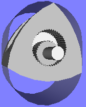
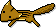

ぬるぬる動くRotary Engine(VRML)
このページではロータリーエンジン(Rotary Engine)の動きを3Dで再現するものです。
自由に角度を変えてみたり、拡大縮小できるところが通常の動画などとは異なるところで、
まさに仮想現実(Virturl Reality)です。

VRMLは残念ながら標準のブラウザでは見ることができませんので、VRMLビューアーを別途インストールする必要があります。
WindowsではCortona 3D ViwerとCortona Mini ViewerというVRMLビューアーをお勧めします。
どうぞVRMLビューアーをインストールしてご鑑賞ください
ソースはオープンソースです(ライセンスは自由)自由に改変、あるいはアイデアだけ使って、
よりリアルなロータリーエンジンを作ってください。
- Virturl Reality Modeling Language(VRML 2.0)

© 2026, Shimarisu